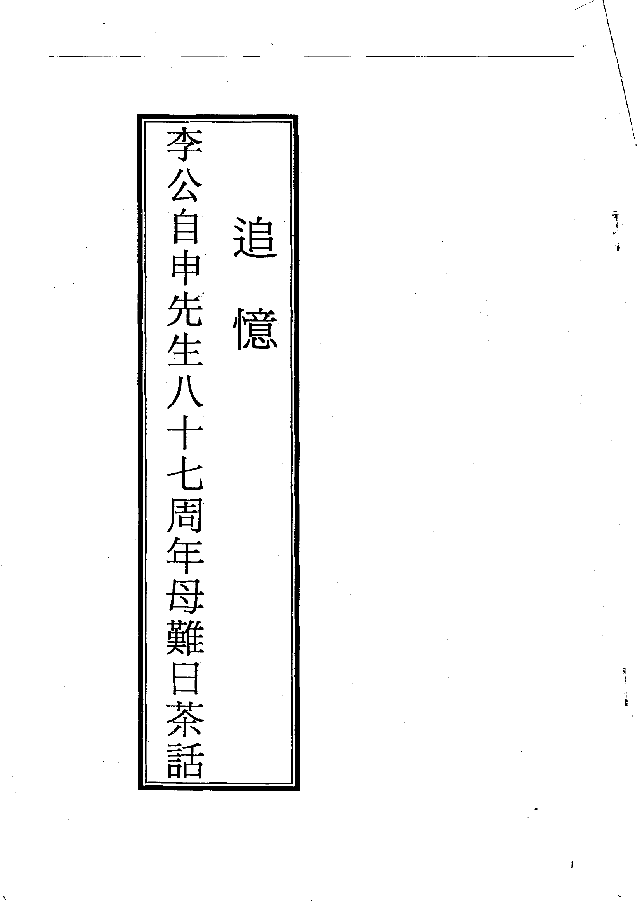
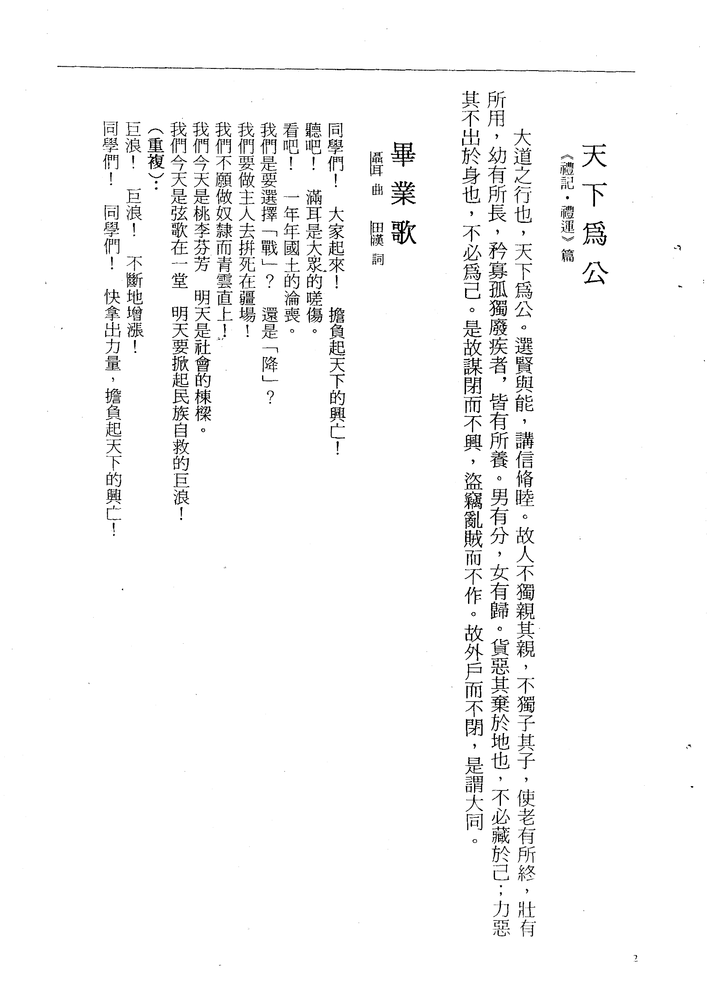
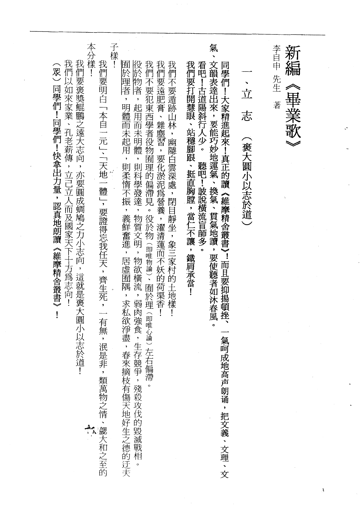
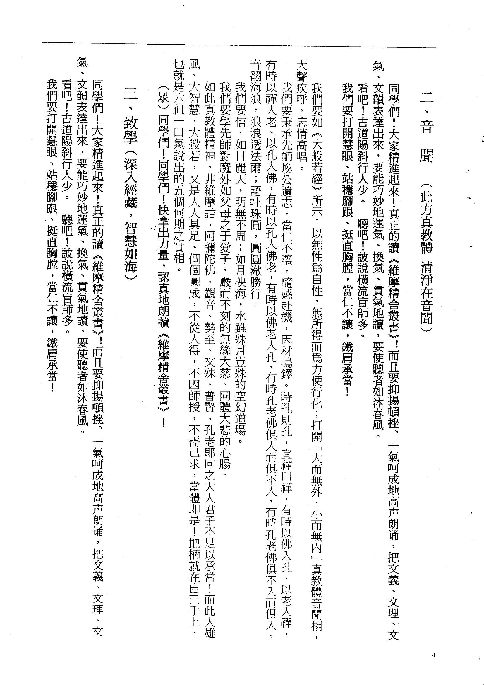
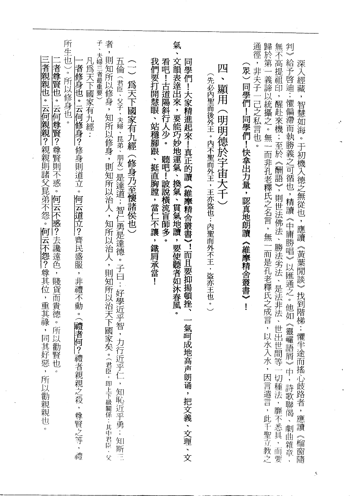
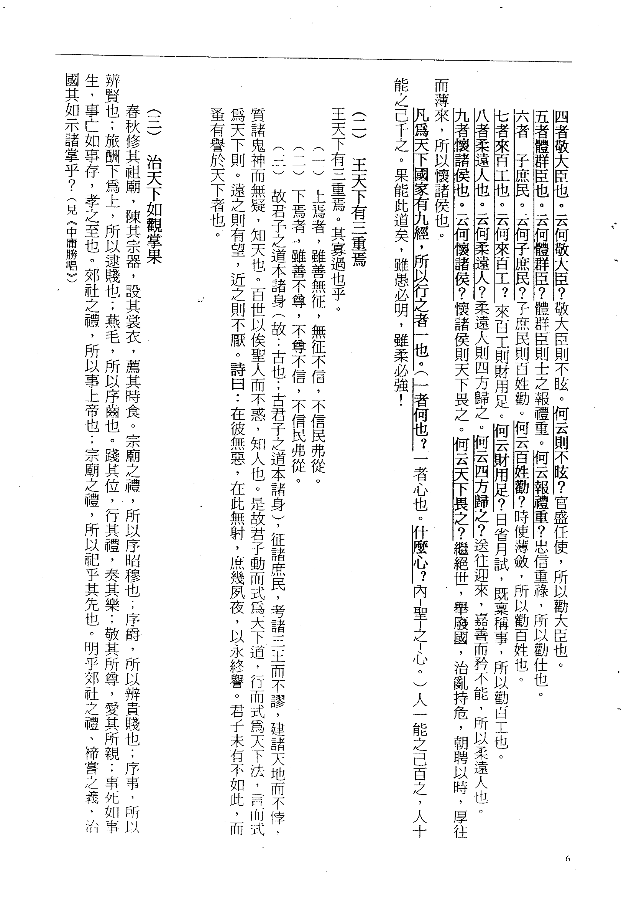
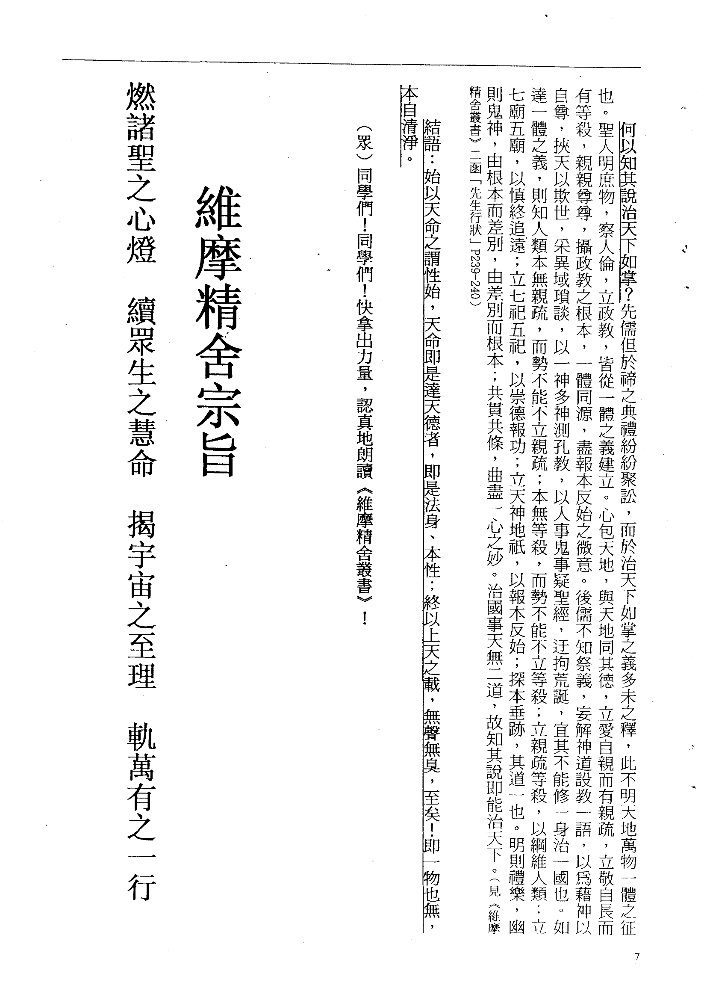
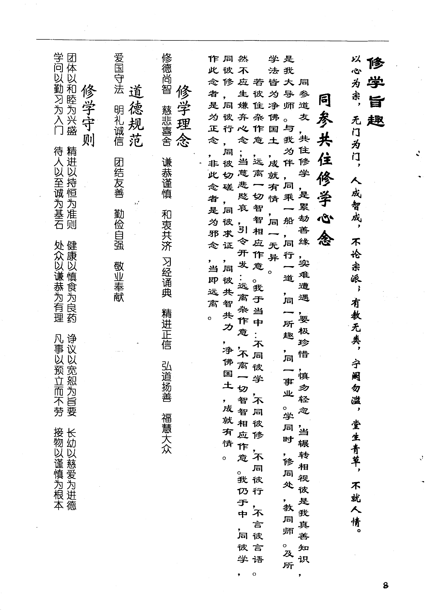
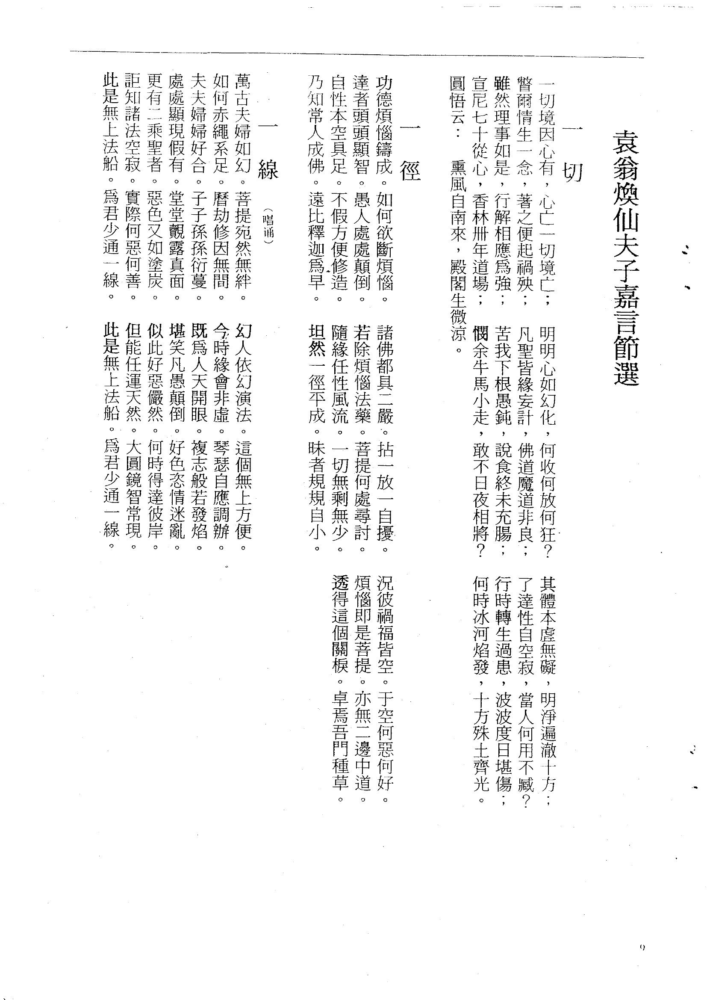
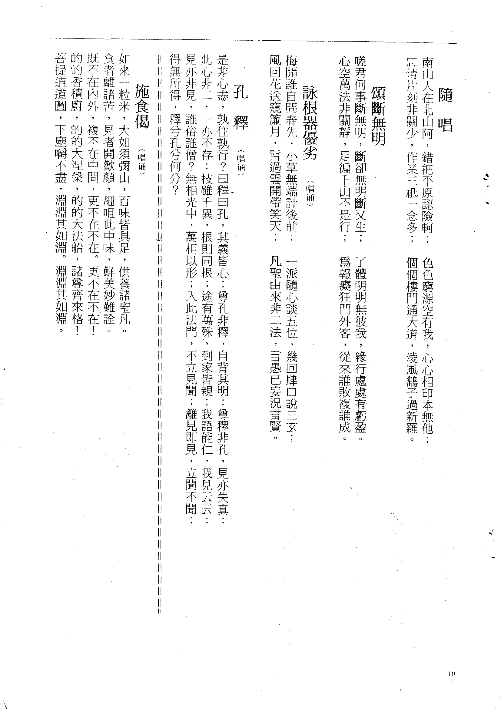

大道之行也，天下为公。选贤与能，讲信修睦。故人不独亲其亲，不独子其子，使老有所终，壮有所用，幼有所长，矜寡孤独废疾者，皆有所养。男有分，女有归。货恶其弃于地也，不必藏于己；力恶其不出于身也，不必为己。是故谋闭而不兴，盗窃乱贼而不作。故外户而不闭，是谓大同。
大道之行也，天下为公。选贤与能，讲信修睦。故人不独亲其亲，不独子其子，使老有所终，壮有所用，幼有所长，矜寡孤独废疾者，皆有所养。男有分，女有归。货恶其弃于地也，不必藏于己；力恶其不出于身也，不必为己。是故谋闭而不兴，盗窃乱贼而不作。故外户而不闭，是谓大同。
听吧！满耳是大众的嗟伤。
看吧！一年年国土的沦丧。
我们是要选择「战」？还是「降」？
我们要做主人去拼死在疆场！
我们不愿做奴隶而青云直上！
我们今天是弦歌在一堂
明天要掀起民族自救的巨浪！
巨浪！巨浪！
不断地增涨！
同学们！同学们！快拿出力量，
担负起天下的兴亡！
同学们！大家精进起来！真正的读《维摩精舍丛书》！而且要抑扬顿挫、一气呵成地高声朗诵，把文义、文理、文气、文韵表达出来，要能巧妙地运气、换气、贯气地读，要使听者如沐春风。
我们不要遁迹山林，幽隐白云深处，闭目静坐，象三家村的土地样！
我们要远肥膏、杂尘习，要化淤泥为营养，濯清涟而不妖的荷渠香！
我们不要犯东西学者役物囿理的偏滞见。役于物（即唯物论）、囿于理（即唯心论）左右偏滞。役于物者，起用而未明体，则科学发达，物质文明，物欲横流，弱肉强食，生存竞争，残杀攻伐的毁灭战相。囿于理者，明体而未起用，则柔懦不振，义鲜奋进，居虚罔隅，求私欲净尽，春来摘枝有伤天地好生之德的迂夫子样！
我们要明白「本自一元」、「天地一体」，要证得忘我任天，齐生死，一有无，泯是非，类万物之情，体太和之至的本分样！
我们要褒奖鲲鹏之远大志向，亦要圆成蜩鸠之力小志向，这就是怀大圆小以志于道！
我们以如来家业、孔老薪传，立己立人而及国家天下十方为志向！
我们要大声疾呼，忘情高唱。
我们要秉成先师焕公遗志，当仁不让，随感赴机，因材鸣铸。时孔则孔，宜禅曰禅，有时以佛入孔、以老入禅，有时以禅入老、以孔入佛，有时以佛老入孔，有时孔老佛俱入而俱不入，有时孔老佛俱不入而俱入。
我们要信，如日丽天，明无不周；如月映海，水虽殊月岂殊的空幻道场。
我们要学先师对魔外如父母之于爱子，严而不刻的无缘大慈、同体大悲的心肠。
如此真教体精神，非维摩诘、阿弥陀佛、观音、势至、文殊、普贤、孔老耶回之大人君子不足以承当！而此大雄风、大智慧、大般若，又是人人具足、个个圆成，不从人得，不因师授，不需己求，当体即是！把柄就在自己手上，也就是六祖一口气说出的五个何期之实相。
我们要如《大般若经》所示：以无性为自性，无所得而为方便行化，打开「大而无外，小而无内」真教体音闻相。
深入经藏，智慧如海。于初机入德之无从也，应读《黄叶闲谈》找到阶梯；惧半途而摇心歧路者，应读《榴窗随判》给予启迪；惧偏滞而执胜义之可循也，精读《中庸胜唱》以汇通之。
他如《灵岩语屑》中，诗歌联偈、剧曲杂章，无不高提祖印，醒赴来机；至于《酬语》，则世法佛法、胜法劣法、是法非法、世出世间等一切种法，靡不悉具，而要归于第一义谛以统摄之。
无一而非孔老释氏之名言，无一而是孔老释氏之成言，以水入水，因言遣言，此千圣立教之通径，非夫子一己之私言也。
同学们！大家精进起来——真正的读《维摩精舍丛书》！而且要抑扬顿挫、一气呵成地高声朗诵，把文义、文理、文气、文韵表达出来，要能巧妙地运气、换气、贯气地读，要使听者如沐春风。
凡为天下国家有九经：五伦（君臣、父子、夫妇、昆弟、朋友）是达道；智仁勇是达德。子曰：好学近乎智，力行近乎仁，知耻近乎勇；知斯三者，则知所以修身，知所以修身，则知所以治人，知所以治人，则知所以治天下国家矣。
一者修身也。云何修身？修身则道立。何云道立？齐民盛服，非礼不动。（礼者何？礼者亲亲之杀，尊贤之等，礼所生也）。所以修身也。
二者尊贤也。云何尊贤？尊贤则不惑。何云不惑？去谗远色，贱货而贵德。所以劝贤也。
三者亲亲也。云何亲亲？亲亲则诸父昆弟不怨。何云不怨？尊其位，重其禄，同其好恶，所以劝亲亲也。
四者敬大臣也。云何敬大臣？敬大臣则不眩。何云则不眩？官盛任使，所以劝大臣也。
五者体群臣也。云何体群臣？体群臣则士之报礼重。何云报礼重？忠信重禄，所以劝仕也。
六者子庶民也。云何子庶民？子庶民则百姓劝。何云百姓劝？时使薄敛，所以劝百姓也。
七者来百工也。云何来百工？来百工则财用足。何云财用足？日省月试，既禀称事，所以劝百工也。
八者柔远人也。云何柔远人？柔远人则四方归之。何云四方归之？送往迎来，嘉善而矜不能，所以柔远人也。
九者怀诸侯也。云何怀诸侯？怀诸侯则天下畏之。何云天下畏之？继绝世，举废国，治乱持危，朝聘以时，厚往而薄来，所以怀诸侯也。
凡为天下国家有九经，所以行之者一也。（一者何也？一者心也。什么心？内「圣」之心。）人一能之己百之，人十能之己千之。果能此道矣，虽愚必明，虽柔必强！
王天下有三重焉。其寡过也乎。
（一）上焉者，虽善无征，无征不信，不信民弗从。
（二）下焉者，虽善不尊，不尊不信，不信民弗从。
（三）故君子之道本诸身（故：古也；古君子之道本诸身），征诸庶民，考诸三王而不谬，建诸天地而不悖，质诸鬼神而无疑，知天也。百世以俟圣人而不惑，知人也。是故君子动而式为天下道，行而式为天下法，言而式为天下则。远之则有望，近之则不厌。诗曰：在彼无恶，在此无射，庶几夙夜，以永终誉。君子未有不如此，而蚤有誉于天下者也。
春秋修其祖庙，陈其宗器，设其裳衣，荐其时食。宗庙之礼，所以序昭穆也；序爵，所以辨贵贱也；序事，所以辨贤也；旅酬下为上，所以逮贱也；燕毛，所以序齿也。践其位，行其礼，奏其乐；敬其所尊，爱其所亲；事死如事生，事亡如事存，孝之至也。郊社之礼，所以事上帝也；宗庙之礼，所以祀乎其先也。明乎郊社之礼、禘尝之义，治国其如示诸掌乎？（见《中庸胜唱》）
何以知其说治天下如掌？先儒但于禘之典礼纷纷聚讼，而于治天下如掌之义多未之释，此不明天地万物一体之征也。圣人明庶物，察人伦，立政教，皆从一体之义建立。心包天地，与天地同其德，立爱自亲而有等杀，亲亲尊尊，摄政教之根本，一体同源，尽报本反始之微意。
后儒不知祭义，妄解神道设教一语，以为藉神以自尊，挟天以欺世，采异域琐谈，以一神多神测孔教，以人事鬼事疑圣经，迁拘荒诞，宜其不能修一身治一国也。如达一体之义，则知人类本无亲疏，而势不能不立亲疏；本无等杀，而势不能不立等杀，以纲维人类；立七庙五庙，以慎终追远；立七祀五祀，以崇德报功；立天神地祇，以报本反始；探本垂迹，其道一也。明则礼乐，幽则鬼神，由根本而差别，由差别而根本，共贯共条，曲尽一心之妙。治国事天无一道，故知其说即能治天下。（见《维摩精舍丛书》二函「先生行状」）
燃诸圣之心灯
续众生之慧命
揭宇宙之至理
轨万有之一行
本自清净。
结语：始以天命之谓性始，天命即是达天德者，即是法身、本性；终以上天之载，无声无臭，至矣！即一物也无。
一切境因心有，心亡一切境亡；
警尔情生一念，著之便起祸殃；
虽然理事如是，行解相应为强；
宣尼七十从心，香林卅年道场；
圆悟云：熏风自南来，殿阁生微凉。
明明心如幻化，何收何放何狂？
凡圣皆缘妄计，佛道魔道非良；
苦我下根愚钝，说食终未充肠；
悯余牛马小走，敢不日夜相将？
其体本虚无碍，明净遍澈十方；
了达性自空寂，当人何用不臧？
行时转生过患，波波度日堪伤；
何时冰河焰发，十方殊土齐光。
功德烦恼铸成，如何欲断烦恼。
愚人处处颠倒，不假方便修造。
自性本空具足，远比释迦为早。
诸佛都具二严，拈一放一自扰。
若除烦恼法药，菩提何处寻讨。
随缘任性风流，一切无剩无少。
坦然一径平成，昧者规规自小。
况彼祸福皆空，于空何恶何好。
烦恼即是菩提，亦无二边中道。
透得这个关楔，卓焉吾门种草。
万古夫妇如幻，菩提宛然无绊。
如何赤绳系足，历劫修因无间。
如如亦妇妇好合，子子孙孙衍蔓。
处处显现假有，堂堂观露真面。
更有二乘圣者，恶色又如涂炭。
讵知诸法空寂，实际何恶何善。
夫夫妇妇好合，子子孙孙衍蔓。
处处显现假有，堂堂观露真面。
这是无上法船，为君少通一线。
幻人依幻演法。这个无上方便。
今时缘会非虚，琴瑟自应调办。
既为人天开眼，复志般若发焰。
堪笑凡愚颠倒，好色恣情迷乱。
似此好恶俨然，何时得达彼岸。
但能任运天然，大圆镜智常现。
这是无上法船，为君少通一线。
南山人在北山阿，错把平原认险岘；
忘情片刻非关少，作业三祇一念多；
色色穷源空有我，心心相印本无他；
个个栖门通大道，凌风鹄子过新罗。
嗟君何事断无明，断却无明断又生；
心空万法非关静，足遍千山不是行；
了体明明无彼我，缘行处处有亏盈。
为报痴狂门外客，从来谁败复谁成。
梅开谁自问春先，小草无端计后前；
一派随心谈五位，几回肆口说三玄；
风回花送窥帘月，雪过云开带笑天；
凡圣由来非二法，言愚已妄况言贤。
是非心尽，孰住孰行？曰释曰孔，其义皆心；
尊孔非释，自背其明；尊释非孔，见亦失真；
此心非二，一亦不存；枝虽千异，根则同根；
途有万殊，到家皆亲；我语能仁，我见云云；
见亦非见，谁俗谁僧？无相光中，万相以形；
入此法门，不立见闻；离见即见，立闻不闻；
得无所得，释兮孔兮何分？
如来一粒米，大如须弥山，百味皆具足，供养诸圣凡。
食者离诸苦，见者开欢颜，细咀此中味，鲜美妙难诠。
既不在内外，复不在中间，更不在不在，更不在不在！
的的香积厨，的大涅槃，的大法船，诸尊齐来格！
菩提道道圆，下尘嚼不尽，渊渊其如渊。
以心为宗，无门为门，人成智成，不论宗派；有教无类，宁阙勿滥，堂生青草，不就人情。
同参道友，共住修学，是累劫善缘，实难遭遇，要极珍惜，慎勿轻忽，当辗转相视彼是我真善知识，是我大导师。与我为伴，同乘一船，同行一道，同一所趣，同一事业。学同时，修同处，教同师。及所学法皆为净佛国土，成就有情，同一无异。
若彼住杂作意，远离一切智智相应作意。我于当中：不同彼学，不同彼修，不同彼行，不同彼言。然不应生嫌弃心念；当悲慈愍哀，引令开发：远离杂作意，不离一切智智相应作意。我仍于中，同彼学，同彼修，同彼行，同彼切磋，同彼求证，同彼共智共力，净佛国土，成就有情。
作此念者是为正念，非此念者是为邪念，当即远离。
修德尚智 · 慈悲喜舍 · 谦恭谨慎 · 和衷共济
习经诵典 · 精进正信 · 弘道扬善 · 福慧大众
爱国守法 · 明礼诚信 · 团结友善 · 勤俭自强 · 敬业奉献
第 1 页

第 2 页

第 3 页

第 4 页

第 5 页

第 6 页

第 7 页

第 8 页

第 9 页

第 10 页
